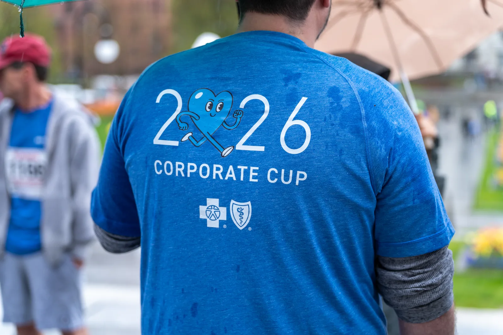
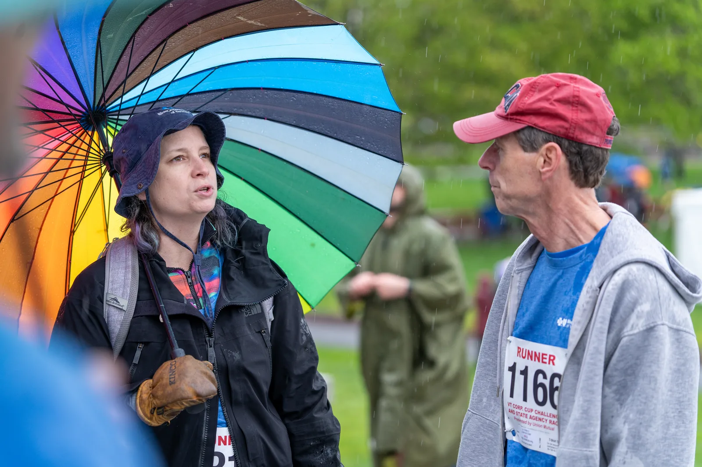
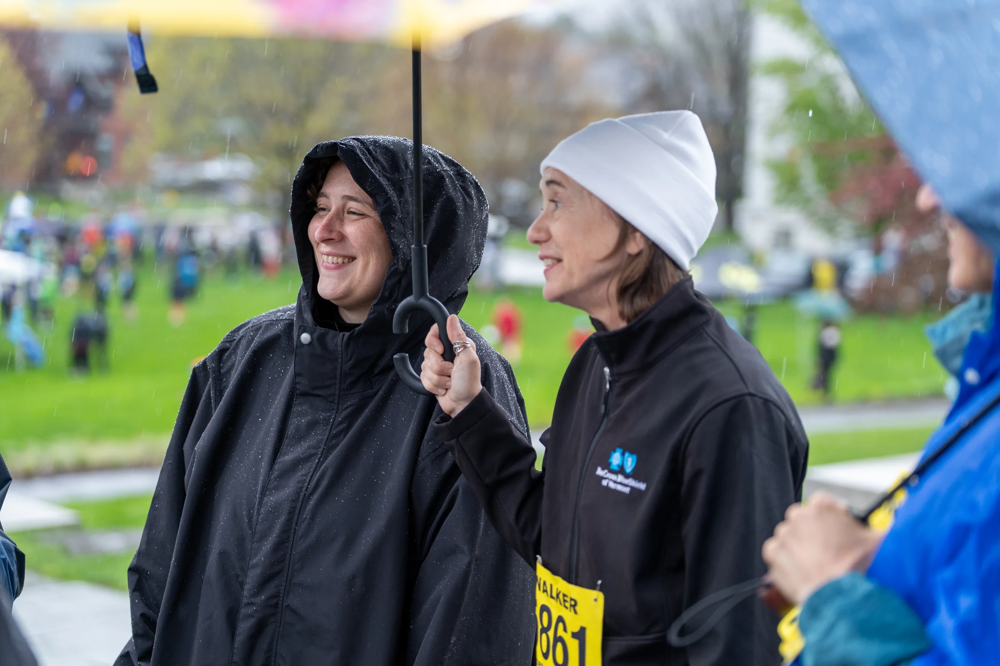
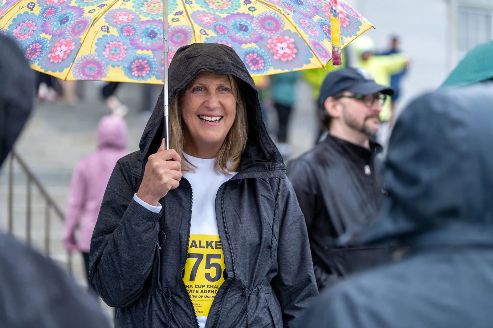
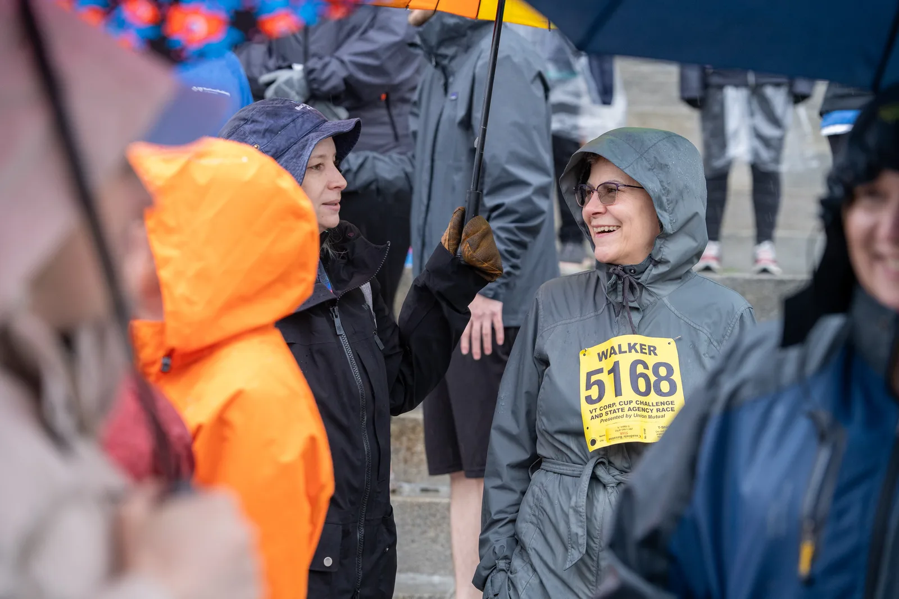
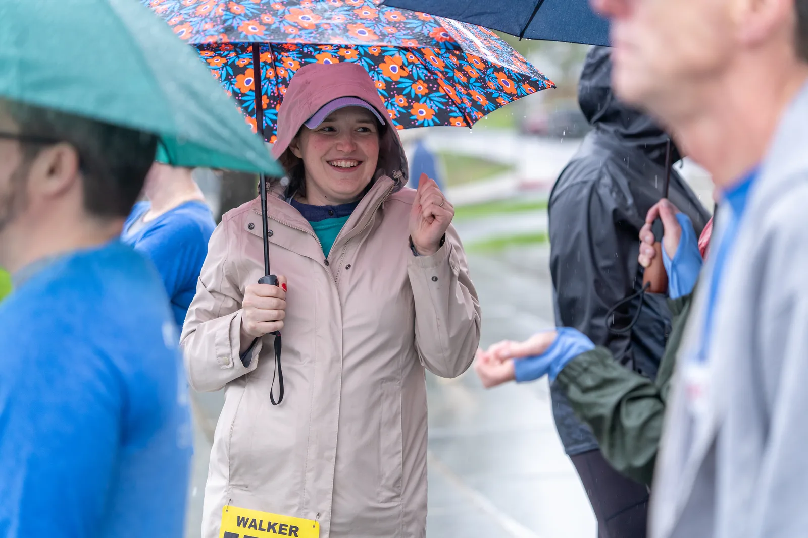
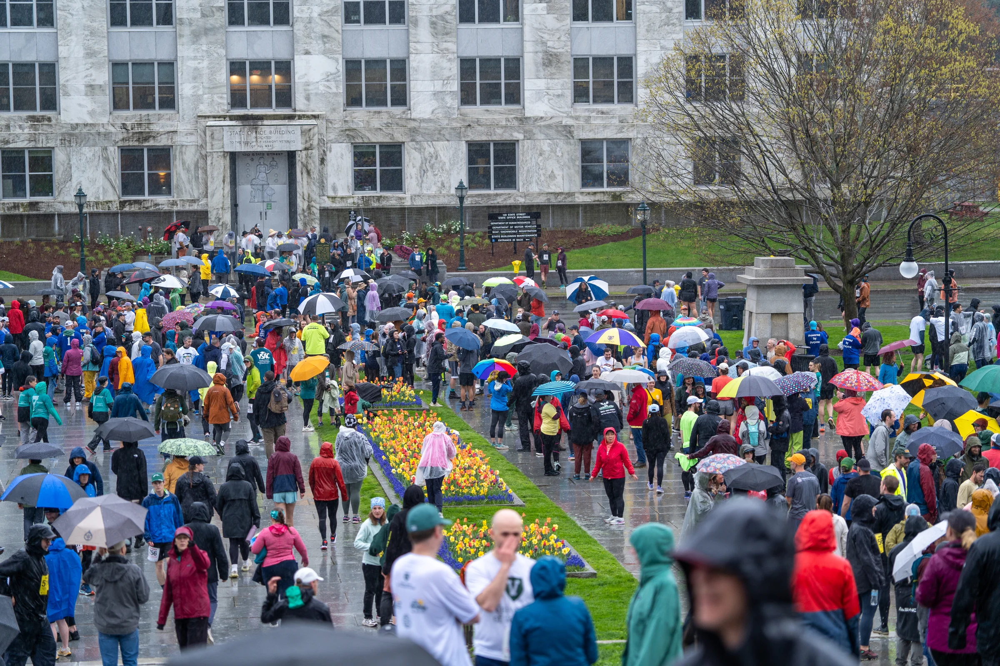
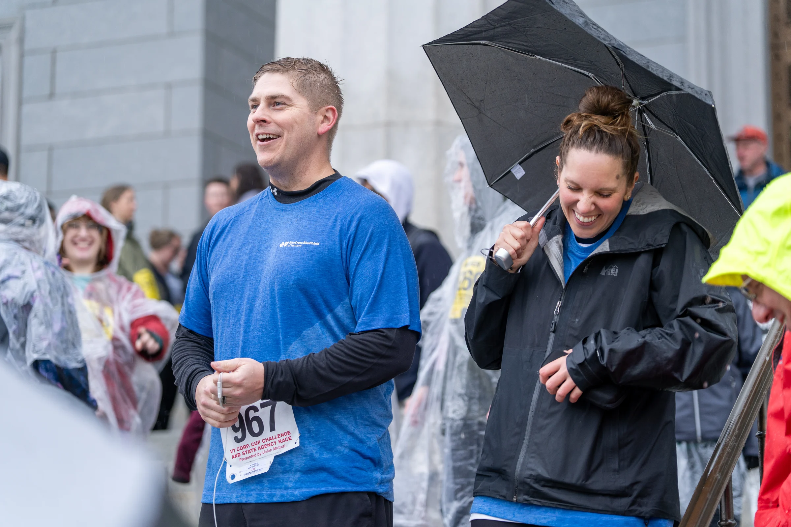

Event photography · Blue Cross Vermont · May 14, 2026
Corporate Cup 2026
A workday in Montpelier turned into a citywide race. I photographed the Blue Cross Vermont team, the start, the course, and the moments around the finish.
9 photographs
Complete gallery








